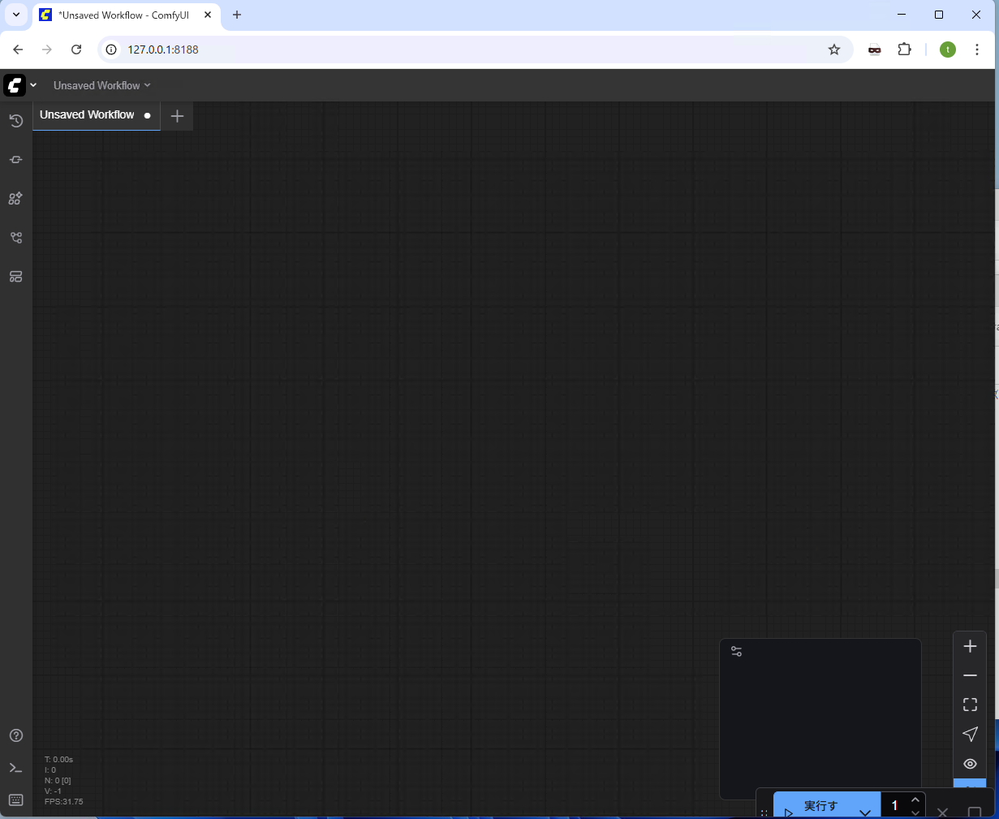

Windows でのインストールと実行
インストール
通常の ComfyUI でも動きますが、 ComfyUIGradioに含まれる ComfyUI で 動作するので、こちらをインストールしてください。
もし、通常の ComfyUI を使用する場合、カスタムノードとして ComfyUI-GGUFと ComfyUI-DepthAnythingV2 をインストールしてください。
こちらをクリックして ComfyUIGradio2 をダウンロードしてください。ComfyUIGradio2 をインストールしたい フォルダにファイルを移動させ、右クリックしすべて展開を選びファイルを展開してください。 ComfyGradio のフォルダに展開するとこうなります。

モデルのダウンロード
FLUX Kontext と Wan2.2 I2V と Wan2.2 S2V と Qwen Image Edit のモデルをまとめて
ダウンロードできるツールを用意してあります。
ComfyUIGradio2 フォルダ内にあるmodel_download.bat をダブルクリックして実行し、
models フォルダを丸ごと ComfyUI フォルダに移動させてください。
ComfyUIGradio に含まれる ComfyUI を利用している場合、モデルファイルが 2 つ 重複していますが、上書きして問題ありません。
50GB 程度ダウンロードするので、ストレージの容量と通信回線容量に気を付けてください。
SDXL モデルは WAI-NSFW-illustrious-SDXL-v14.0 などをダウンロードして、ComfyUI をインストールしたフォルダの models フォルダの checkpoints フォルダに移動させてください。
実行
ComfyUI を先に起動してください。ComfyUI のポータブル版や ComfyUIGradio の ComfyUI の場合は、
run_nvidia_gpu.bat をダブルクリックしてください。自動でブラウザが開かれるまで待っていてください。
開かれたブラウザは閉じても構いません。

次に ComfyUIGradio2 フォルダのComfyUIGradio2 フォルダ を開き、run_comfyuigradio2.batをダブル
クリックしてください。 ターミナルで ComfyUIGradio2 が起動し、ブラウザが開かれます。
起動オプション
ComfyUI を別のマシンで動かしている場合、次のオプションで接続できます。
- --server_addr ComfyUIのアドレス
- --server_port ComfyUIのポート番号
エディタでrun_comfyuigradio2.batを開き、python app.pyの箇所を次のように修正してください。
python app.py --server_addr ComfyUIのアドレス --server_port ComfyUIのポート番号
終了方法
ComfyUI のターミナルと ComfyUIGradio2 のターミナルとブラウザを閉じてください。
Linuxや手動でインストールする場合
ComfyUI のインストール
公式サイトなどを 参考に ComfyUI をインストールしてください。
Radeon についてはRadeon 7800 XT のメモ も参考にどうぞ。
カスタムノードは、ComfyUI-GGUFとComfyUI-DepthAnythingV2を使うので、
これらをgitでインストールしてください。
ComfyUIフォルダ以下で次のようにして ComfyUI-GGUF と ComfyUI-DepthAnythingV2 カスタムノードをインストールしてください。
cd custom_nodes
git clone https://github.com/city96/ComfyUI-GGUF
cd ComfyUI-GGUF
pip install -r requirements.txt
cd ..
git clone https://github.com/kijai/ComfyUI-DepthAnythingV2
cd ComfyUI-DepthAnythingV2
pip install -r requirements.txt
cd ..
ComfyUIGradio2 のインストール
python 3.13 と git をインストールしてください。
git でファイルを取得し、venvでPython環境を構築して有効にし、pipで必要な
モジュールをインストールします。
git clone https://github.com/asfdrwe/ComfyUIGradio2
cd ComfyUIGradio
python3.13 -m venv venv
. venv/bin/activate
pip install -r requirements.txt
モデル
適当な SDXL モデルと、FLUX Kontext と Wan2.2 I2V と Wan2.2 S2V と Qwen Image Edit の
モデルをダウンロードして ComfyUI のmodelsフォルダ以下の適切なフォルダに
移動させてください。
| モデル | 場所 |
|---|---|
| SD1.5、SDXL モデル | chekcpoints |
| LoRA(DMD2やWan2.2 Lightning等) | loras |
| FLUX-Kontext-dev GGUF と Wan2.2_I2V-A14B-GGUF と Wan2.2-S2V-14 と Qwen_Image_Edit | diffusion_models または unet |
| t5-xxl GGUF と umt5-xxl-encoder-gguf と Qwen2.5-VL-7B-Instruct とQwen2.5-VL-7B-Instruct-mmproj | clip または text_encoders |
| FLUX-VAE と wan_2.1_vae と Qwen_Image-VAE | vae |
SDXL モデルと LoRA の例
FLUX Kontext dev GGUF
Wan 2.2 I2V
Wan 2.2 S2V
Qwen Image Edit
- Qwen-Image-Edit-GGUF と Qwen_Image-VAE
- Qwen-Image-Edit-Lightning
- Qwen2.5-VL-7B-Instruct と Qwen2.5-VL-7B-Instruct-mmproj
実行
ターミナルで ComfyUI を起動してください。別のターミナルで
python app.py
で ComfyUIGradio2 を起動してください。
終了方法
ターミナルで Ctrl+C を押して、ComfyUI や ComfyUIGradio2 を終了させてください。
Radeon での動画生成の注意点
Fedora 42 + Radeon RX 7800 XT では ComfyUI の動作がいまいちです。
画像生成の場合、ComfyUI を --use-split-cross-attention --force-fp16 --fp16-vae付きで起動しないと
VAE デコーディング時に VRAM 不足でタイリングになる場合があるので生成が遅くなります。
FLUX Kontextでは fp16-vae の代わりに--bf16-vae を付けないと黒画像が生成されます。
Wan 2.2 は、High と Low の切り替え時にモデルのロードで動作が止まり、うまく動かせていません。